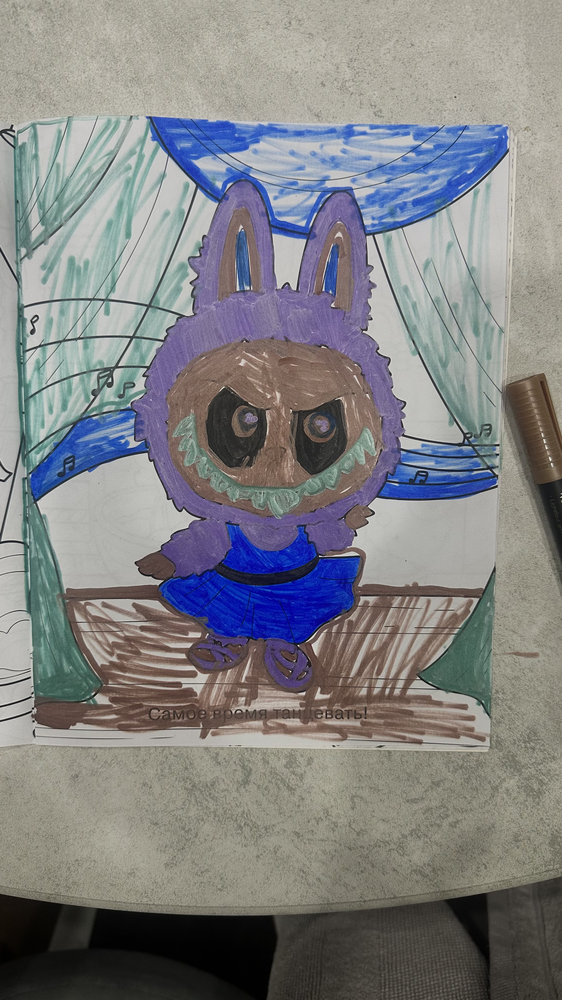

Портфолио Python-разработчика Андрея
Моя специализация
- Работа с системами учёта и аналитики — имею опыт разработки комплексных систем учёта для косметологических клиник, включая складской учёт и аналитику.
- Разработка инструментов для мониторинга и анализа данных — создал инструмент WEB donor для мониторинга цен и ассортимента на маркетплейсах.
- Оптимизация бизнес-процессов — разработал проект по планированию маршрутов для оптимизации рабочих процессов и повышения эффективности компаний.
- Создание систем отчётности — опыт работы с различными видами отчётности (ежедневной, еженедельной, квартальной, годовой).
- Разработка систем управления складом — владею навыками контроля остатков, автоматического заказа товаров и учёта различных единиц измерения.
- Работа с клиентской аналитикой — умею классифицировать клиентов по категориям (лояльные, стабильные, в зоне риска и др.), применять ABC-анализ.
- Создание комплексных информационных систем — опыт разработки многофункциональных систем с множеством взаимосвязанных модулей (учёт, аналитика, отчётность, управление).
- Внедрение систем напоминаний и уведомлений — имею опыт работы с механизмами автоматических напоминаний в различных проектах.
- Разработка инструментов для оптимизации рабочего графика — создал системы планирования и управления рабочим временем сотрудников.
- Работа с большими объёмами данных — опыт обработки значительных массивов информации (история процедур, складские остатки, отчёты по продажам и т. д.).

👋 Здравствуйте! Я Андрей — Python-разработчик со специализацией в ML. Помогаю бизнесу оптимизировать процессы и внедрять передовые технологические решения.
Интерфейс косметологической клиники
Разработка комплексной системы учёта и аналитики для косметологической клиники. Система включает в себя следующие ключевые функции:
- Учёт процедур и расходных материалов:
- учёт сразу нескольких товаров при разведении в процедурах;
- контроль стоимости склада;
- автоматическое отслеживание товаров по критическим остаткам.
- Аналитика и отчётность:
- история процедур;
- расчёт стоимости и маржинальности;
- построение графиков по ключевым показателям:
- выручка по дням;
- динамика среднего чека;
- количество проведённых процедур.
- Управление рабочим графиком врачей.
- Управление складом.
- Отчётность по периодам.
- Классификация пациентов.
Слоган проекта:
«Стратегическая аналитика без лишних сложностей»
WEB donor
Инструмент мониторинга и анализа цен и ассортимента на различных маркетплейсах и интернет-магазинах независимо от их региональной принадлежности.
Слоган проекта:
«Не плати лишнего — плати выгодно!»
Планирование маршрутов
Разработка сервиса для получения оптимальных маршрутов и времени выезда.
- Расчёт оптимального маршрута из точки А в точку Б;
- Оптимизация продуктивного рабочего графика.
Слоган проекта:
«Концентрация внимания — максимальный результат!»
📧 Контакты
- Email: lukoshkiny573@gmail.com
- Telegram: 89384337447
🤝 Давайте обсудим ваш проект! ...
© 2025 Андрей Лукoшкин. Все права защищены.